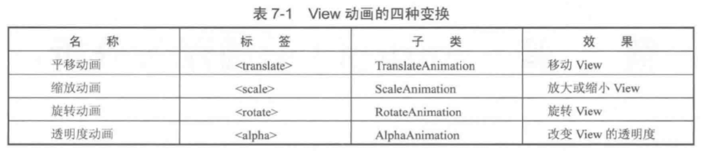

Android 开发艺术探索学习笔记（四）

结合 官方文档 阅读《Android 开发艺术探索》时所做的学习笔记。本篇记录第 6、7、12 章：Drawable、动画、Bitmap 相关。
Drawable
Drawable 是一种抽象的概念，表示一种可以在屏幕上进行绘制 (Draw) 的图像，常见的颜色和图片都可以是 Drawable。
Drawable 一般没有大小的概念，当作为 View 的 background 的时候，它会被拉伸至 View 同等大小。不过它有两个参数，getIntrinsicWidth 和 getIntrinsicHeight 表示内在的宽高，可以理解为默认宽高，比如显示一张图片时，这个值所对应的宽高就是当前图片的宽高，当作为 ColorDrawable 的时候该值则为 -1。
Drawable 的分类
Drawable 类型比较多，而且也没必要记住所有属性，需要时查文档就可以了：
- BitmapDrawable
- NinePatchDrawable
- ShapeDrawable
- LayerDrawable
- StateListDrawable
- LevelListDrawable
- TransitionDrawable
- InsetDrawable
- ClipDrawable
- ScaleDrawable
自定义 Drawable
只要重写 draw() 方法就可以了，例子见：android-art-res / Chapter_6
扩展阅读
Animation
动画可以分为属性动画 (Property Animation) 和 View 动画。View 动画通过对图像做各种变换（平移、旋转、缩放、透明度）从而产生动画效果，而属性动画则通过动态修改对象的属性来达到动画效果。推荐优先使用属性动画。
View 动画
Tween animation
补间动画分为平移动画、缩放动画、旋转动画和透明度动画，它们既可以通过 XML 定义也可以通过代码动态创建。xml 文件一般放在 res/anim 目录下。
Frame Animation
帧动画其实就是一组预先定义好的图片，然后逐帧显示。使用帧动画如果图片过大，可能会导致 OOM，所以需要注意图片尺寸的问题。xml 文件一般放在 res/drawable 目录下。
特殊的 Tween Animation
LayoutAnimation
主要用于 ViewGroup，使用后子元素出场时会显示该动画，比如用于 ListView 或者 RecyclerView，为 item 设置进入时的从左往右进入，或者先变大然后恢复的动效。
扩展阅读：Auto animate layout updates
Activity 切换效果
我们可以通过在 activity 启动以及结束前使用 overridePendingTransition(enterAnimId, exitAnimId) 或者 ActivityOptions.makeCustomAnimation(context, enterAnimId, exitAnimId) 来指定 Activity 的切换效果。
另外，Android 5.0 之后还支持共享元素的过渡效果，具体请阅读：Start an activity using an animation
属性动画
属性动画与 View 动画不同，它对作用对象进行了扩展，因此可以对任何对象做动画，甚至可以没有对象，而且实现的效果也更加丰富多样。
属性动画的使用
常用的类有 ValueAnimator，ObjectAnimator 和 AnimatorSet。其中 ObjectAnimator 继承自 ValueAnimator，AnimatorSet 是一组动画集合。对应的 xml 标签分别是 <objectAnimator> <animator> <set>，xml 文件一般放在 res/animator 目录下。
不过属性动画使用代码进行操作更为简便，比如垂直平移一个 View 只要这样：
1 | |
插值器和估值器
插值器我理解为动画的变化方式（速率等），而估值器表示某一个时间节点下的变化的值。系统自带的插值器有：TimeInterpolator / LinearInterpolator / AccelerateDecelerateInterpolator 等，如果我们想要自定义动画效果，一般需要实现 Interpolator 和 TypeEvaluator。
属性动画的监听器
我们可以实现对动画播放过程的监听，主要通过 Animator.AnimatorListener，可以监听动画的开始、结束、取消、重新播放。 ValueAnimator.AnimatorUpdateListener，可以监听动画的更新，通过 ValueAnimator.getAnimatedValue() 获取变化值，我们还可以利用这个方法自定义出一些特殊效果。
属性动画的工作原理
通过获取 View 上的该属性的初始值（如果没有提供初始值则调用属性的 get 方法）和最终值（即我们 set 进去的值，xml 中的 toValue），然后以动画的效果，多次调用其 set 方法，直到达到最终值。源码解析就不贴了。
对于某些属性，即使提供了 set get 方法，但是对其做属性动画依旧没效果，原因是该属性不会带来 UI 显示上的变化，自然看上去就像没有效果了，比如 TextView 的 setWidth 和 getWidth，这个方法指定的是最大宽度，而不是实际显示的宽度，所以对它做属性动画不会有效果。
我们可以通过两种方式来改变这种状况，一种是通过包装原始对象，并为其提供 set 和 get 方法。另一种是通过上面提到的 ValueAnimator.AnimtorUpdateListener 加上估值器，手动修改对应的属性来实现效果。例子见：android-art-res / Chapter_7。推荐使用第一种，因为更容易复用。
扩展阅读
Bitmap 的加载和缓存
Bitmap 的高效加载
我们通过 Bitmap 加载图片的时候，一般都需要考虑图片大小的问题，图片越大占用的内存也就越多，一不小心还有可能造成 OOM，所以对于大图来说一般会做缩放后再显示。
核心思想是，首先通过为 BitmapFactory.Options 的 inJustDecodeBounds 设置 true，对图片进行采样获取到宽高（不会为图片像素点分配内存，因此不会消耗太大），然后再根据实际需要显示的宽高，计算出合理的缩放倍数，然后再对图片进行真正的加载。
1 | |
BitmapFactory 除了 decodeResource() 这一从资源中读取 Bitmap 的方式外，还可以使用 decodeFile()、decodeStream()、decodeByteArray() 这几种方式，分别表示从文件、字节流、Byte 数组中读取并加载 Bitmap，这些方法最终调用的都是 native 方法，由 Android 底层实现。
扩展阅读
内存缓存和磁盘缓存
在 RecyclerView 或者 ViewPager 中加载大量图片时，如果不做特殊处理，由于 View 的复用以及垃圾回收机制的存在，屏幕之外的图片很快会被回收掉，所以为了让页面保持流畅（不出现白屏也不会因为重复加载图片导致卡顿），我们就需要使用缓存来加速图片的恢复加载。
内存缓存
通过内存缓存（LruCache），我们可以将 Bitmap 缓存在应用内存中来提升加载速度。LruCache 中使用一个 LinkedHashMap 保存最近引用过的对象，当引用数量超出容量限制的时候就会将最近最少使用的对象移除。
使用 LruCache 缓存图片的时候需要考虑以下问题：
- 图片大小多少，占用多少内存？
- 一屏加载多少图片？有多少是需要预加载的？
- 你的 activity 除了图片之外，其他部分耗内存吗？
- 有哪些图片是频繁访问的？如果有特定图片是频繁访问的，可以选择常驻到内存缓存中。另外，如果有确定的访问频率不一致的图片组，可以考虑使用多个
LruCache。 - 如果是特别大的图片，可以考虑使用多种清晰度的图片，先加载低清晰度图片，然后再使用后台任务加载高清度的图片。
- 如果是本地图片，需要考虑在不同屏幕大小和屏幕密度上设备是否表现一致。
使用 LruCache 加载 Bitmap 的例子：
1 | |
加载 Bitmap 前先判断是否有缓存：
1 | |
磁盘缓存
内存缓存虽然速度快，但是我们也不能完全只依赖它，因为用户手机可能内存很小，应用随时可能被杀死（用户离开一段时间或者有更高优先级的任务占用了内存等等），当用户重新打开你的页面的时候，又要重新加载图片。
DiskLruCache 可以帮我们把加载过的 Bitmap 持久化到存储空间中从而减少用户重新加载的等待时间。
1 | |
因为涉及到文件读写，所以速度肯定要慢一点。而且可以看到，上面 DiskLruCache 是在子线程中创建的，所以当添加或者读取的时候，我们需要使用同步锁。
扩展阅读
ImageLoader 的实现与使用
ImageLoader 的实现
一个图片加载框架一般需要考虑：
- 图片的压缩
- 内存缓存与磁盘缓存
- 同步加载、异步加载
- 通过网络加载
具体实现见：android-art-res / Chapter_12
照片墙效果
优化列表卡顿
不要在
getView()方法中做耗时操作。比如加载图片是耗时操作，如果在getView()中进行加载，那么一定会导致卡顿，所以一般需要异步加载。控制异步任务的执行频率。当用户快速滑动列表时会产生大量异步任务，随后通知主线程进行大量的 UI 更新操作，此时很容易造成卡顿。所以我们可以为列表设置
OnScrollListener.onScrollStateChanged，并在其中判断是否滑动，禁止在滑动时加载图片。开启硬件加速。为 activity 设置
android:hardwareAccelerated="true"，很多莫名的卡顿问题可能都是因为硬件加速没开。
系列文章
- Android 开发艺术探索学习笔记（一） - 第 1 章：生命周期和启动模式
- Android 开发艺术探索学习笔记（二） - 第 2 章：IPC 机制
- Android 开发艺术探索学习笔记（三） - 第 3~5 章：View 事件机制等
- Android 开发艺术探索学习笔记（四） - 第 6, 7, 12 章：Drawable，动画，Bitmap
- Android 开发艺术探索学习笔记（五） - 第 8, 10, 11 章：Window，线程和线程池，消息机制
- Android 开发艺术探索学习笔记（六） - 第 13~15 章：综合技术，JNI 和 NDK，性能优化